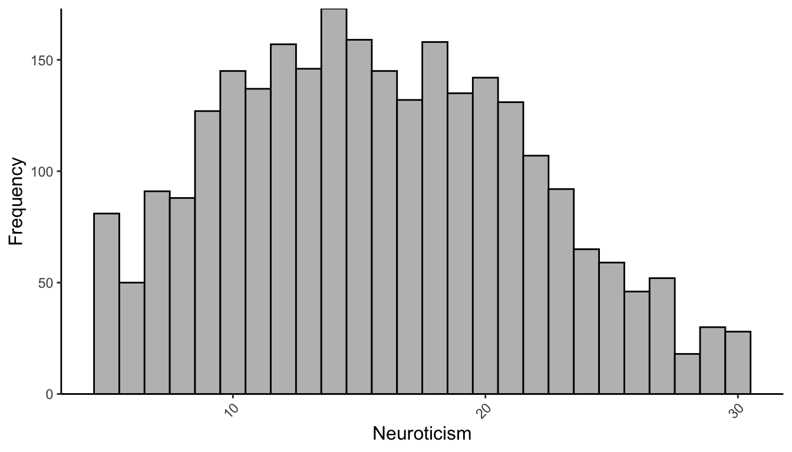
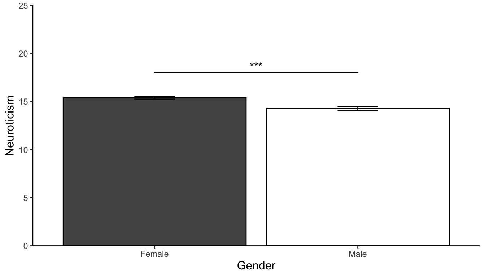

太陽と月を利用した\(\pi\)の低速計算アルゴリズムに関する理論的研究
1 はじめに
まず，Abrams (2020) のように，すると，bibファイル内のAbramsの2020年の論文が引用されます。そして，次のように，[]でくくると文末の引用スタイルになります(Allport 1967)。また，文末に複数引用する場合は，こういう感じにします(ベルクソン [1889] 2002; Freud 1956–1974)。このQmdファイルではBibLatex-jpaを使っていますので，日本語文献も処理できます。例えば，向田 (2009) , 堀 (2009), 矢嶋 and 長谷川 (2013) は，XXXについて示した(von Helmholtz [1910] 1925; Freud 1956–1974)などの文章も処理できます。
1.1 節では、過去における研究について述べ、 2 章では、現状と今後の課題について述べる。 また、付録 9.1 におまけその１を添付する。
1.1 過去における研究

過去における研究としては(Krizhevsky, Sutskever, and Hinton 2012)などがある。Figure 1 に示すように、CNNの構造は複雑である。
数式の表示を確認するため、いくつかの例を示す。インライン数式の例として、相関係数は \(r = 0.85\) であった。また、平均値は \(\mu = 100\)、標準偏差は \(\sigma = 15\) である。
ディスプレイ数式（番号付き）の例として、オイラーの公式は以下のように表される：
\[ e^{i\pi} + 1 = 0 \tag{1}\]
Equation 1 は数学において最も美しい公式の一つとして知られている。
また、zスコアの計算式は Equation 2 で示される：
\[ z = \frac{X - \mu}{\sigma} \tag{2}\]
番号なしのディスプレイ数式の例として、標準誤差は以下のように計算される：
\[ \sigma_e = \sigma_y \sqrt{1 - r_{xy}^2} \]
1.1.1 先行研究での知見1
1.1.2 先行研究での知見2
1.1.3 先行研究での知見3
1.1.4 先行研究での知見4
1.1.5 先行研究での知見5
1.1.6 先行研究での知見6
1.1.7 先行研究での知見7
1.2 先行研究の問題点
1.3 研究の目的と意義
研究の目的と意義 研究の目的と意義 研究の目的と意義 研究の目的と意義 研究の目的と意義 研究の目的と意義 研究の目的と意義 研究の目的と意義 研究の目的と意義 研究の目的と意義 研究の目的と意義 研究の目的と意義 研究の目的と意義 研究の目的と意義 研究の目的と意義 研究の目的と意義
2 現状と今後の課題
現状と今後の課題 現状と今後の課題 現状と今後の課題 現状と今後の課題 現状と今後の課題 現状と今後の課題 現状と今後の課題 現状と今後の課題 現状と今後の課題 現状と今後の課題 現状と今後の課題 現状と今後の課題 現状と今後の課題 現状と今後の課題 現状と今後の課題 現状と今後の課題
3 方法
3.1 参加者
3.2 実験材料・装置・刺激
Figure 2 は、ミュラー・リヤー錯視の典型的な例を示している。
3.3 統計解析
統計解析は，macOS 15.3.1上で，R version 4.3.3 (2024-02-29)を用いて実施された。
4 結果
4.1 記述統計
Table 1 に、Big Five因子の記述統計量を示す。
4.2 メインの解析の前提となる解析
4.2.1 変数間の相関係数
変数間の相関係数を以下に示す。
4.2.2 ヒストグラム
神経症傾向の分布を Figure 3 に示す。

4.2.3 2群の比較（連続変数）
神経症傾向に関して性差を検討したところ,男性(M = 14.74, SD = 5.72)よりも、女性(M = 16.35, SD = 6.03)の方が有意に神経症傾向が高かった(t (1853.20) = 6.77, p = 0.00 , d = 0.27,95 %CI [0.19, 0.35])。この結果を Figure 4 に示す。

4.2.4 2群の比較（離散変数）
女性より、男性の方が高学歴者が多いことが示唆された( \(\chi ^2\) (1.00, N = 2800) = 8.61, p = 0.00)。詳細は Table 2 を参照されたい。
4.3 メインの解析の記載
4.3.1 重回帰分析
重回帰分析の結果を以下に示す。
4.3.2 分散分析の結果
分散分析の結果を以下に示す。
4.4 メインの解析結果を補強する解析の記載
5 考察
5.1 主要な発見の概要
5.2 考えられるメカニズムの考察と説明
5.3 関連のある先行研究の結果との比較
5.4 研究結果が与える示唆
5.5 研究の限界と今後の課題
5.6 結論
6 要約
7 謝辞
Thank you. Thank you.
8 参考文献
9 付録
9.1 おまけその１
これはおまけです。これはおまけです。これはおまけです。これはおまけです。 これはおまけです。これはおまけです。これはおまけです。これはおまけです。 これはおまけです。これはおまけです。これはおまけです。これはおまけです。 これはおまけです。これはおまけです。これはおまけです。これはおまけです。

9.2 おまけその２
これもおまけです。これもおまけです。これもおまけです。これもおまけです。 これもおまけです。これもおまけです。これもおまけです。これもおまけです。 これもおまけです。これもおまけです。これもおまけです。これもおまけです。 これもおまけです。これもおまけです。これもおまけです。これもおまけです。